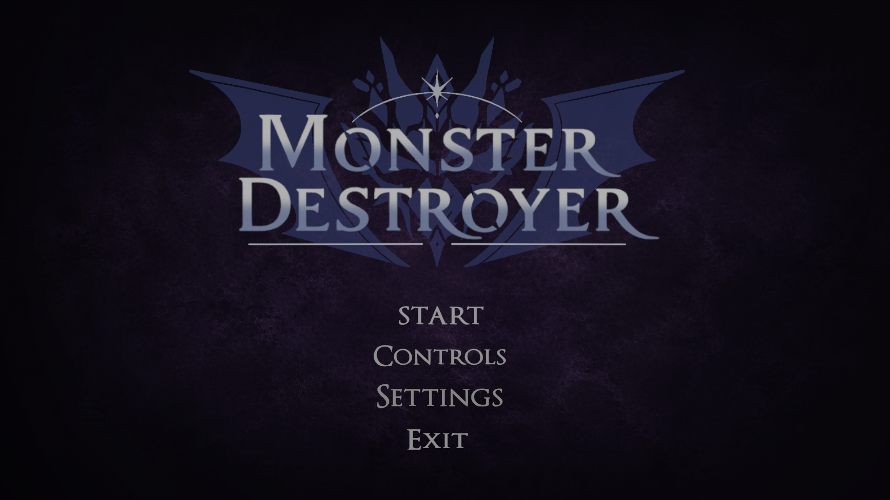
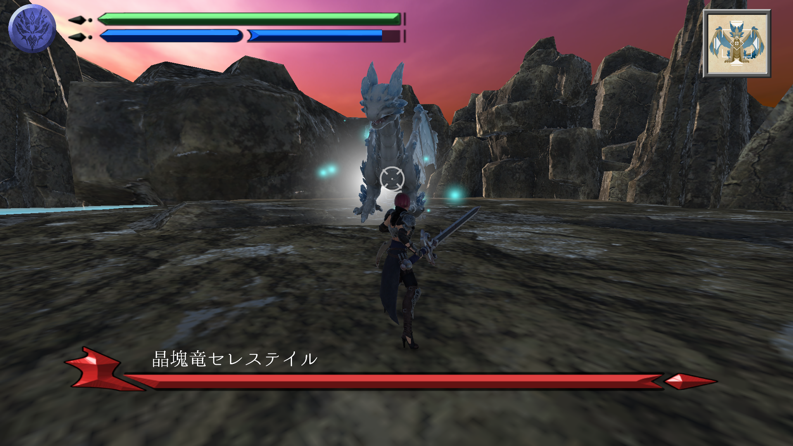
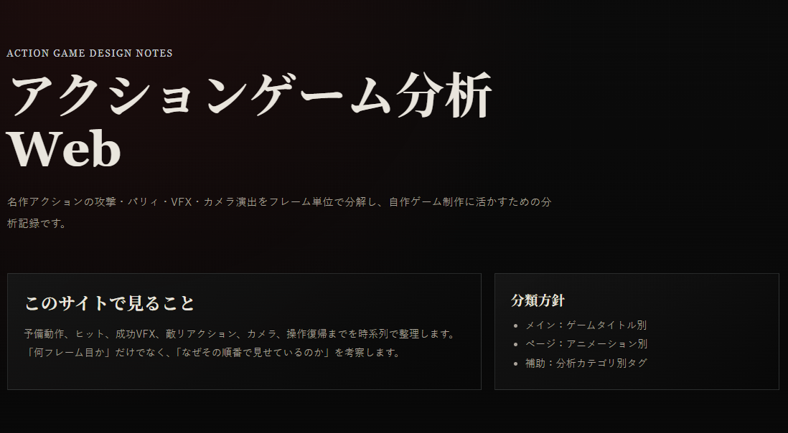
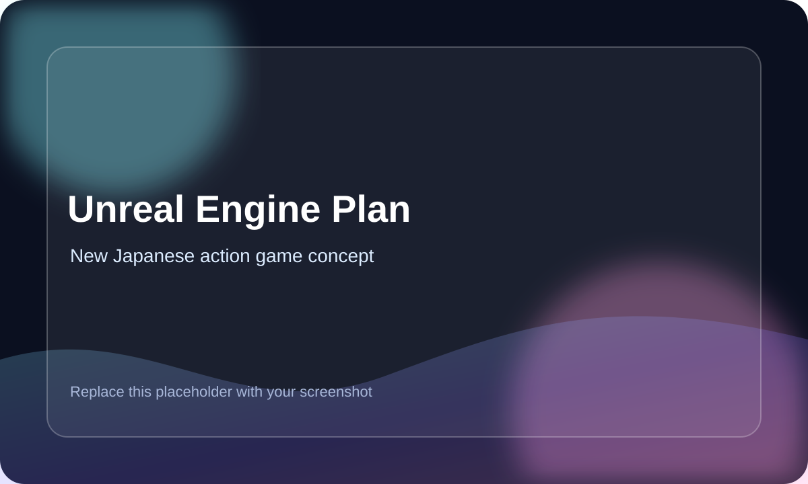

制作物
『Monster Destroyer』の制作振り返り兼紹介サイトを掲載しています。制作意図、担当範囲、テストプレイをもとにした改善内容を確認できます。
Updating
このサイトは、ゲームプランナー志望としての制作物・分析・企画書をまとめる入口として、継続的に更新しています。
現在は、Unityで制作した3Dボス戦ゲーム『Monster Destroyer』の紹介に加え、人気タイトルのアクションをフレーム単位で分析した「アクションゲーム分析Web」、Unreal Engineでのアクションゲーム制作を見据えた企画書を順次追加・更新しています。
今後も、制作物や分析ページ、企画書PDFなどを追加しながら、企画・分析・試作の取り組みを整理していきます。
『Monster Destroyer』の制作振り返り兼紹介サイトを掲載しています。制作意図、担当範囲、テストプレイをもとにした改善内容を確認できます。
人気タイトルの攻撃モーションや演出をフレーム単位で分析し、ゲームごと・アニメーションごとにページを追加しています。
Unreal Engineでのアクションゲーム制作を見据えた企画書PDFを公開しています。今後も内容を更新しながら、企画意図や仕様を整理していきます。
Direction
ゲームプランナーを志望しています。特に、アクションゲームにおけるボス戦、バトル設計、ステージ設計に関心があります。
私が作りたいのは、どれだけ強大に見える敵やボスであっても、プレイヤースキル次第で最初から最後まで完封できる余地があるアクションゲームです。 ただ敵を弱くするのではなく、敵の予備動作、攻撃後の隙、プレイヤー側のリスクとリターンを丁寧に設計することで、同じボスであってもプレイヤーの実力によって戦闘展開が大きく変わる体験を作りたいと考えています。
現在は、Unreal Engineでのアクションゲーム制作を見据え、自分が目指しているゲーム体験を企画書として形にすることを目標にしています。 企画書制作、Unityでのボス戦試作、人気タイトルのアクションをフレーム単位で分析してサイトに公開する取り組みを通して、企画・分析・試作の経験を積み重ねています。
Self PR
私の強みは、企画を現実的な形に落とし込み、限られた期間でも最後まで形にする力です。
3Dボス戦ゲーム『Monster Destroyer』では、ほぼ未経験の2人で制作を進める中、私が制作全体を主導しました。 必要な作業を洗い出し、優先順位を整理しながら、約2週間でボス戦として遊べる形まで制作しました。
156名規模の軽音楽部で副部長を務め、ライブ企画、大学へ提出する書類作成、当日運営、トラブル対応、連絡整理、後輩への引き継ぎを担当しました。 新入生100名以上に向けた部活動説明のプレゼンも経験しています。
eスポーツサークルのApex大会では、運営の副責任者を経験しました。 複数人で進めるイベント運営に加え、ゲームへの理解度を評価され、大会では解説も担当しました。
Game Experience
アクションゲームをプレイする中で、操作そのものだけでなく、VFXやSFXが爽快感に大きく関わっていると感じています。
例えば『SEKIRO』では、弾きやジャストガード時に発生する火花のVFXやSEが、しつこくなりすぎない範囲で強く演出されており、成功した瞬間の手応えを高めています。 また、アクションゲーム分析Webにも掲載していますが、攻撃を弾いた瞬間そのものではなく、プレイヤーが成功を認知しやすいタイミングに合わせるため、あえて数フレーム遅らせて火花やSEを発生させている点にも注目しています。
このように、敵の攻撃設計やプレイヤー操作だけでなく、成功したことが直感的に伝わる演出も、アクションゲームの気持ちよさを作る重要な要素だと考えています。
詳細なフレーム分析を見る →オンラインゲームでは、競技性のあるルール設計や、自分の実力・実績を他人に見せられる仕組みが、やり込みにつながると感じています。
例えばAPEX Legendsでは、ランクシステムによって自分の実力を段階的に示すことができ、キル数や取得難易度の高いバッジをバナーに表示することで、他プレイヤーに自分の実績を伝えることができます。
このように、プレイヤーの上達意欲や承認欲求に働きかける仕組みも、ゲームを長く遊び続けてもらうための重要な設計要素だと考えています。
アクションゲームからは、敵の予備動作、攻撃後の隙、VFX・SFXによる成功報酬など、操作していて気持ちよい手触りの重要性を学びました。
オンラインゲームからは、ランク、バッジ、戦績表示など、自分の実力や実績を他人に示せる仕組みが、長期的なやり込みにつながることを学びました。
今後は、アクションゲームの爽快感と、オンラインゲームの競技性・実績を見せられる仕組みを組み合わせ、PvEでもPvPでもやり込めるゲームを作りたいと考えています。
Works
Unity / 3D Boss Battle / Prototype
Unityで制作した3Dボス戦アクションです。企画を実際に遊べる形へ落とし込む経験と、実装までのハードルを体系的に学ぶことを目的に制作しました。 ほぼ未経験の2人で制作し、私は制作全体の主導、企画、実装、UI、難易度調整、テスト分析、Blender制作補助を担当しました。
約2週間で、難易度選択、部位破壊、リザルトスコア、パッド操作対応まで含めた、ボス戦として遊べる形まで制作しました。 詳細な制作意図や改善内容は、制作振り返り兼紹介サイトにまとめています。

Difficulty Select
画像をドラッグ・スワイプして Easy / Normal / Hard を確認できます。

実際のプレイ画面。HP、ブリンクゲージ、ボスHP、クエストアイコンなど、戦闘中に必要な情報が見えるようにUIを調整しました。

Analysis / Web
人気タイトルのアクションをフレーム単位で分析し、予備動作、攻撃発生、硬直、反撃タイミングなどを整理してサイトに公開しています。 現在も更新中で、ゲームごと・アニメーションごとに分析ページを追加していく予定です。
アクションゲーム分析Webを見る →
Planning / Unreal Engine
Unreal Engineでのアクションゲーム制作を見据え、自分が目指しているゲーム体験を企画書として形にすることを目標にしています。 現在は、プレイヤーアクション、敵の攻撃設計、ステージ構成、リスクとリターンの整理を進めています。
企画書PDFを見る →External Links
GitHub
制作中のコードや試作プロジェクトをまとめています。実装は学習中の部分も多く、改善しながら整理しています。